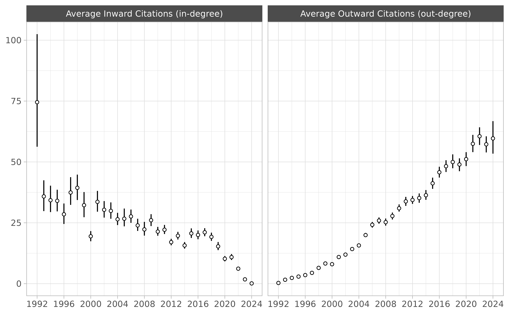
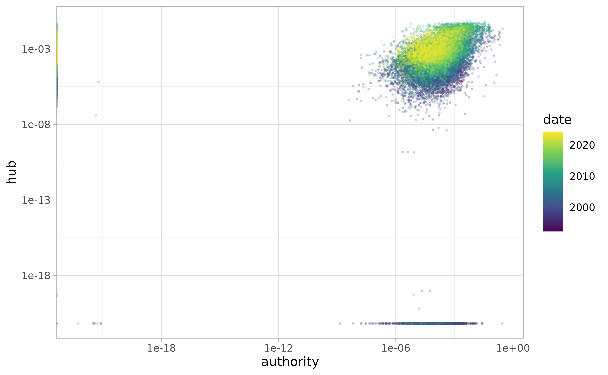

Note. All datasets described here were created using these scripts, which use the functions described in the search and download article.
library(ccc)
#> Loading required package: Matrix
#> Para más información:
#> https://www.corteconstitucional.gov.co/relatoria/32 Years
ccc collects a corpus of over 28,245 rulings made by the
Colombian Constitutional Court (CCC) which cover the period of 32 years
immediately after the first ruling was published on April 3, 1992. All
together, they form a complex citation network with approximately
694,565 ties among them.
Each ruling has a standardized name (e.g., C-776-03,
T-025-04, SU-1184-01). The prefix refers to
the type of ruling; the infix carries no meaning; and the suffix
indicates the year in which the ruling was made.
There are three types of ruling:
Crefers to the cases in which the CCC decides whether a law, rule, administrative decision is compatible with constitutional norms—also known as judicial review.-
Trefers to tutela, which is an individual complaint mechanism (or special writ) aimed at the protection of fundamental rights. These tutelas give ordinary citizens the power to go before any ordinary judge and request the protection of their “fundamental constitutional rights” whenever they perceive them be threatened. Each year, the CCC selects approximately 2% of these cases for review, and the final decision may uphold or reverse decisions made by lower courts.A lot of these cases are related to healthcare access and pensions.
SUrefers to decisions in which the Court has decided to compile severalTcases. They are a sort of legally binding “Annual Reviews” for the judicial system in Colombia.
Citations
metadata contains information on each ruling.
metadata
#> # A tibble: 28,245 × 9
#> id type year date indegree outdegree word_count descriptors url
#> <chr> <fct> <int> <date> <int> <int> <int> <list> <chr>
#> 1 T-001-… T 1992 1992-04-03 188 0 7060 <chr [14]> http…
#> 2 C-004-… C 1992 1992-05-07 119 0 20107 <chr [11]> http…
#> 3 T-002-… T 1992 1992-05-08 286 0 7597 <chr [4]> http…
#> 4 T-003-… T 1992 1992-05-11 146 0 5760 <chr [8]> http…
#> 5 C-005-… C 1992 1992-05-11 7 1 6869 <chr [11]> http…
#> 6 T-006-… T 1992 1992-05-12 228 0 32408 <chr [21]> http…
#> # ℹ 28,239 more rowscitations contains the citation network in “edge list”
format. Each citation has a weight that refers to the
number of times a ruling cites a previous case.
citations
#> # A tibble: 694,565 × 5
#> from to weight from_date to_date
#> <fct> <fct> <int> <date> <date>
#> 1 C-001-18 C-004-93 1 2018-01-24 1993-01-14
#> 2 C-001-18 C-007-01 1 2018-01-24 2001-01-17
#> 3 C-001-18 C-008-17 1 2018-01-24 2017-01-18
#> 4 C-001-18 C-030-03 1 2018-01-24 2003-01-28
#> 5 C-001-18 C-037-96 1 2018-01-24 1996-02-05
#> 6 C-001-18 C-041-93 1 2018-01-24 1993-02-11
#> # ℹ 694,559 more rowsThere is also a convenient function that turns these two datasets into a squared adjacency matrix.
M <- create_citation_adj_mat()
dim(M)
#> [1] 28245 28245The resulting matrix is very sparse. It has 797,780,025 cells and only 0.087% are non-zero.
The following figure is my best attempt at visualizing the whole thing:

Note. If we were to observe an empty column, it would mean that none of the rulings created during that particular time period where cited in future rulings (i.e., rulings that failed to become precedent). If we were to observe an empty row, it would mean that none of the rulings created during that particular time period cited previous rulings. Both of these scenarios are entirely hypothetical.
Time Traveling
A citation network is always directed, asymmetric, and acyclic—i.e., it points backwards in time.
Let’s assume that is lower triangular, meaning that all elements above the main diagonal are zero. This happens when the documents are arranged from first to last, the rows represent source documents, and the columns represent target documents. The main diagonal is also zero because we won’t allow any document to cite itself.
Note. The direction of the citation can be considered backwards in time (i.e., documents citing past documents) or forwards in time (i.e., knowledge flowing from documents to future documents). Here I use a backward-looking convention. In acyclic temporal graphs of this sort, the in-degree of the earliest node is always zero and the out-degree of the newest node is also always zero.
However, the CCC matrix is not lower triangular. Some documents cite each other in a way that creates the illusion of time travel because the court has been writing them simultaneously. In some (very few) cases a ruling will cite another one that will be published a couple months later.
Other rulings have been modified many years later for privacy
concerns—e.g., T-1003-99. In such cases the CCC has
modified the original to text to ensure that the names of the parties
involved are rendered anonymous.
These sorts of modifications are usually prefaced by a small editorial note at the beginning of the document.
url <- "https://www.corteconstitucional.gov.co/relatoria/1999/T-1003-99.htm"
txt <- ccc_txt(url)
#> https://www.corteconstitucional.gov.co/relatoria/1999/T-1003-99.htm
txt |>
stringr::str_trunc(width = 300) |>
stringr::str_squish() |>
stringr::str_wrap() |>
cat()
#> NOTA DE RELATORIA: Mediante auto 397 de fecha 19 de julio de 2019, el cual se
#> anexa en la parte final de esta providencia, se ordena suprimir el nombre y los
#> datos que permitan identificar al accionante y, en su lugar, sustituirlos por el
#> nombre ficticio de “Miguel”. Sentencia T-1...This document is also accompanied by a small text—labeled Auto 397/19—which contains citations to future rulings that deal with the issue of anonymity in public documents. There are more examples of this kind of time travel in the CCC dataset.
Thus, the upper triangular section of the matrix for the Colombian Constitutional Court has various non-zero entries.
Text Features
See Denny and Spirling (2018) for an in-depth discussion of various pre-processing steps (e.g., removal of stop words, lemmatization, lowercasing).
The docterms dataset contains a data frame with document
identifiers (id) and word counts (lemma and
n). It has 24,836,293 rows.
docterms
#> # A tibble: 24,836,293 × 3
#> id lemma n
#> <fct> <fct> <int>
#> 1 T-001-92 abril 1
#> 2 T-001-92 abstencion 1
#> 3 T-001-92 abstener 2
#> 4 T-001-92 acabar 3
#> 5 T-001-92 acatar 2
#> 6 T-001-92 acceder 2
#> # ℹ 24,836,287 more rowsThis dataset contains 28,245 unique documents with a vocabulary size of 7,238.
The create_dtm() function creates a sparse document-term
matrix from the information contained in docterms.
A <- create_dtm()
dim(A)
#> [1] 28245 7238Close to 91% of the cells in this matrix are empty, which is why we call it a “sparse matrix.”
mean(A == 0L)
#> [1] 0.8785139Here is a random subset of :
set.seed(1111)
i <- sample(1:nrow(A), 10)
j <- sample(1:ncol(A), 5)
A[i, j]
#> 10 x 5 sparse Matrix of class "dgCMatrix"
#> accionada arbitrario diferenciado escenario indigencia
#> T-432-21 . 2 1 . .
#> T-034-21 . . . . .
#> T-667-02 . . . . .
#> C-256-08 . 10 1 . .
#> T-718-17 . . 15 2 .
#> C-676-01 . . . . .
#> T-273-97 . . . . .
#> T-867-02 . 1 . . .
#> T-494-92 . . . . .
#> C-942-08 . . . . .Centrality
Citations Across Time
The following Figure shows average in-degree (citations) and out-degree (references) made in each ruling across the years. Note that, on average, the decisions written during 1992 tend to be significantly more cited that the ones written in other years, giving them some sort of “first-movers advantage” over the others—i.e., the most innovative thing of any kind is the first of its kind.

Fowler and Jeon (2008) interpret the panel on the right as evidence that the legal norm of stare decisis is becoming stronger, but that’s definitely wishful thinking. Leskovec, Kleinberg, and Faloutsos (2007) show that that out-degree tends to grow over time in many different kinds of networks.
The following Figure disaggregates both kinds of citation by type of ruling.
#> Warning: The `fatten` argument of `geom_pointrange()` is deprecated as of ggplot2 4.0.0.
#> ℹ Please use the `size` aesthetic instead.
#> This warning is displayed once every 8 hours.
#> Call `lifecycle::last_lifecycle_warnings()` to see where this warning was
#> generated.
Hubs and Authorities
Instead focusing on in-degree or out-degree, we can follow Fowler and Jeon (2008) in calculating more sophisticated measures of centrality.
The key insight is that we can transform the original (unweighted) citation matrix in two different ways:
-
A co-citation matrix in which any two rulings are connected by the total number of other rulings that cite both. The
cocitation()function inigraphmakes the following calculation: -
A bibliographic coupling, in which any two rulings are connected by the number of common references. The
bibcoupling()function inigraphmakes the following calculation:
Here, the diagonal elements of correspond to the in-degree for each ruling (or the row sums of ); whereas the diagonal elements of correspond to the out-degree for each ruling (or the column sums of ).
Following Kleinberg (1999), Fowler and Jeon (2008) calculate authority and score hubs for each ruling. These are the first eigenvectors of and respectively. Ronald Breiger once noted that “several stories might be, and are, told about eigenvectors. They are the low-dimensional scaffolds that support higher-dimensional structures.” In social networks, eigenvectors are interpreted as a measure of “centrality” which roughly translates to the extent to which a node well-connected to other well-connected nodes.
In this case, the story is supposed to go something like this:
The authority score of a case depends on the number of times it is cited and the quality of the cases that cite it. Symmetrically, the hub score of a case depends on the number of cases it cites and the quality of the cases cited. Thus, authority scores indicate the degree to which a case is thought to be important for resolving other important issues that come before the Court, while hub scores indicate the degree to which a case is well-grounded in previous important rulings.
Fowler and Jeon (2008, 17)
Calculating these scores is pretty straightforward using the
igraph package:
Measurements of authority are correlated with in-degree measurements, but they’re not the same thing.
Note. Given the large number of T cases, it makes
sense that the most “central” C rulings define what a tutela is
(C-543-92) and further clarify the circumstances under
which a tutela can be presented against decisions made by lower courts
(C-590-05).
The same goes for “hub” and “out-degree” measurements.

Note. It makes sense that SU rulings are heavily represented as “hubs.”
Finally, note that authority and hub scores are somewhat related to each other; however, by definition, the very first rulings can never be hubs and the very last rulings can never be authorities. Hence we see three clusters.
